# probability space model formulation
Omega = list() # outcome space initialization
idx = 1 # outcome index initialization
for(r in 1:6){ # outcomes red die
for(b in 1:6){ # outcomes blue die
Omega[[idx]] = c(r,b) # \omega \in \Omega
idx = idx + 1 }} # outcome index update
K = length(Omega) # cardinality of \Omega
pi = rep(1/K,1,K) # probability function \pi
# random process run
omega = Omega[[which(rmultinom(1,1,pi) == 1)]] # selection of \omega according to \mathbb{P}({\omega})
# realization of the random variable
xi_omega = sum(omega) # \xi(\omega)21 Random variables
With the concept of a random variable, this chapter introduces the standard probabilistic model for a univariate data point. Central to this model is the possibility of specifying distributions of random variables by means of probability mass functions and probability density functions. Moreover, because random variables are constructed as maps of random outcomes, the study of the distributions of these transformed random outcomes leads directly to a core topic of frequentist inference.
21.1 Definition
We first sketch the construction of a random variable and its distribution using Figure 21.1. Let \((\Omega,\mathcal{A},\mathbb{P})\) be a probability space and let \[\begin{equation} \xi : \Omega \to \mathcal{X}, \omega \mapsto \xi(\omega) \end{equation}\] be a map. Furthermore, let \(\mathcal{S}\) be a \(\sigma\)-algebra on the target set \(\mathcal{X}\) of this map. For every \(S \in \mathcal{S}\), let the preimage set of \(S\) be given by (cf. Definition 4.2) \[\begin{equation} \xi^{-1}(S) := \{\omega \in \Omega|\xi(\omega) \in S\}. \end{equation}\] If now \(\xi^{-1}(S) \in \mathcal{A}\) holds for all \(S \in \mathcal{S}\), then the map \(\xi\) is called measurable. Thus, assume that \(\xi\) is measurable. Then each \(S \in \mathcal{S}\) can be assigned the probability \[\begin{equation} \mathbb{P}_\xi: \mathcal{S} \to [0,1], S \mapsto \mathbb{P}_\xi(S) := \mathbb{P}\left(\xi^{-1}(S)\right) = \mathbb{P}\left(\{\omega \in \Omega|\xi(\omega) \in S\}\right). \end{equation}\] In this context, \(\xi\) is called a random variable and \(\mathbb{P}_\xi\) is called the image measure or the distribution of \(\xi\). Overall, starting from the probability space \((\Omega,\mathcal{A},\mathbb{P})\), the random variable \(\xi\) has thus been used to construct the probability space \((\mathcal{X},\mathcal{S},\mathbb{P}_\xi)\). Formally, a random variable is therefore defined as follows.
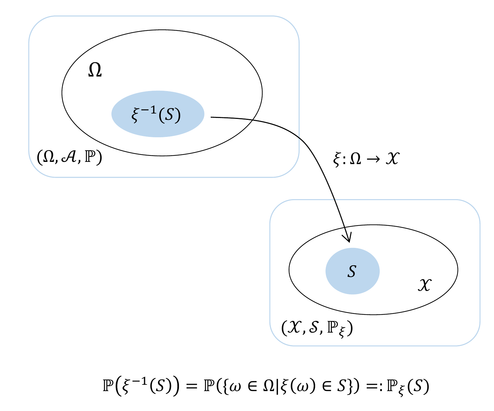
Definition 21.1 (Random variable) Let \((\Omega, \mathcal{A}, \mathbb{P})\) be a probability space and let \((\mathcal{X},\mathcal{S})\) be a measurable space. A random variable is defined as a map \(\xi:\Omega \to \mathcal{X}\) with the measurability property \[\begin{equation} \{\omega \in \Omega|\xi(\omega) \in S \} \in \mathcal{A} \mbox{ for all } S \in \mathcal{S}. \end{equation}\]
According to Definition 21.1, random variables are neither “random” nor “variables”, but measurable maps. If one asks about the meaning of randomness for the values \(\xi(\omega)\) of random variables, then the implicit frequentist mechanics of the probability space \((\Omega, \mathcal{A}, \mathbb{P})\) again provides the corresponding intuition: in each run of the modeled random process, an \(\omega\) is realized according to \(\mathbb{P}\) and is then mapped deterministically to \(\xi(\omega)\). Accordingly, we define the concepts of the outcome space and the realization of a random variable.
Definition 21.2 (Realization of a random variable) Let \((\Omega, \mathcal{A}, \mathbb{P})\) be a probability space, let \((\mathcal{X},\mathcal{S})\) be a measurable space, and let \(\xi : \Omega \to \mathcal{X}\) be a random variable. Then \(\mathcal{X}\) is called the outcome space of the random variable \(\xi\), and \(\xi(\omega) \in \mathcal{X}\) is called a realization of the random variable \(\xi\).
Example
Building on the example considered in Section 19.3, namely a probability space for modeling the simultaneous throw of a blue and a red die, we consider the sum of the numbers of pips as a first example of a random variable and its distribution. In Section 19.3 we saw that a sensible probability space model for the simultaneous throw of a blue and a red die is given by \((\Omega,\mathcal{A}, \mathbb{P})\) with
- \(\Omega := \{(r,b)| r \in \mathbb{N}_6, b \in \mathbb{N}_6\}\),
- \(\mathcal{A} := \mathcal{P}(\Omega)\) and
- \(\mathbb{P} : \mathcal{A} \to [0,1]\) with \(\mathbb{P}(\{(r,b)\}) = \frac{1}{36}\) for all \((r,b) \in \Omega\).
The evaluation of the sum of the two numbers of pips is then sensibly described by the map \[\begin{equation} \xi : \Omega \to \mathcal{X}, (r,b) \mapsto \xi((r,b)) := r + b, \end{equation}\] where evidently \(\mathcal{X} := \{2,3,...,12\}\) must hold. The outcome space of the random variable is therefore again finite, and \(\mathcal{S} := \mathcal{P}(\mathcal{X})\) is a sensible \(\sigma\)-algebra on \(\mathcal{X}\). With the help of the \(\sigma\)-additivity of \(\mathbb{P}\), we can now compute the distribution \(\mathbb{P}_\xi\) of \(\xi\) for all elementary events \(\{x\} \in \mathcal{S}\) and thereby, in particular, also verify the measurability of \(\xi\), as shown in Table 21.1.
| \(\mathbb{P}_\xi(\{x\})\) | \(\mathbb{P}(\xi^{-1}(\{x\}))\) | \(\mathbb{P}(\{\omega|\xi(\omega) \in \{x\}\})\) | |
|---|---|---|---|
| \(\mathbb{P}_\xi(\{2\})\) | \(\mathbb{P}\left(\xi^{-1}(\{2\})\right)\) | \(\mathbb{P}\left(\{(1,1)\}\right)\) | \(\frac{1}{36}\) |
| \(\mathbb{P}_\xi(\{3\})\) | \(\mathbb{P}\left(\xi^{-1}(\{3\})\right)\) | \(\mathbb{P}\left(\{(1,2),(2,1)\}\right)\) | \(\frac{2}{36}\) |
| \(\mathbb{P}_\xi(\{4\})\) | \(\mathbb{P}\left(\xi^{-1}(\{4\})\right)\) | \(\mathbb{P}\left(\{(1,3),(3,1),(2,2)\}\right)\) | \(\frac{3}{36}\) |
| \(\mathbb{P}_\xi(\{5\})\) | \(\mathbb{P}\left(\xi^{-1}(\{5\})\right)\) | \(\mathbb{P}\left(\{(1,4),(4,1),(2,3),(3,2)\}\right)\) | \(\frac{4}{36}\) |
| \(\mathbb{P}_\xi(\{6\})\) | \(\mathbb{P}\left(\xi^{-1}(\{6\})\right)\) | \(\mathbb{P}\left(\{(1,5),(5,1),(2,4),(4,2),(3,3)\}\right)\) | \(\frac{5}{36}\) |
| \(\mathbb{P}_\xi(\{7\})\) | \(\mathbb{P}\left(\xi^{-1}(\{7\})\right)\) | \(\mathbb{P}\left(\{(1,6),(6,1),(2,5),(5,2),(3,4),(4,3)\}\right)\) | \(\frac{6}{36}\) |
| \(\mathbb{P}_\xi(\{8\})\) | \(\mathbb{P}\left(\xi^{-1}(\{8\})\right)\) | \(\mathbb{P}\left(\{(2,6),(6,2),(3,5),(5,3),(4,4)\}\right)\) | \(\frac{5}{36}\) |
| \(\mathbb{P}_\xi(\{9\})\) | \(\mathbb{P}\left(\xi^{-1}(\{9\})\right)\) | \(\mathbb{P}\left(\{(3,6),(6,3),(4,5),(5,4)\}\right)\) | \(\frac{4}{36}\) |
| \(\mathbb{P}_\xi(\{10\})\) | \(\mathbb{P}\left(\xi^{-1}(\{10\})\right)\) | \(\mathbb{P}\left(\{(4,6),(6,4),(5,5)\}\right)\) | \(\frac{3}{36}\) |
| \(\mathbb{P}_\xi(\{11\})\) | \(\mathbb{P}\left(\xi^{-1}(\{11\})\right)\) | \(\mathbb{P}\left(\{(5,6),(6,5)\}\right)\) | \(\frac{2}{36}\) |
| \(\mathbb{P}_\xi(\{12\})\) | \(\mathbb{P}\left(\xi^{-1}(\{12\})\right)\) | \(\mathbb{P}\left(\{(6,6)\}\right)\) | \(\frac{1}{36}\) |
The probabilities of the elementary events in \(\mathcal{S}\) in turn allow us to compute arbitrary event probabilities with respect to the sum of the dice pips (cf. Section 19.2). Overall, based on \((\Omega, \mathcal{A}, \mathbb{P})\) and \(\xi\), we have thus constructed another probability space model \((\mathcal{X}, \mathcal{S}, \mathbb{P}_\xi)\).
The following R code demonstrates how the construction of the example considered here can be simulated for one run of a random process using computer-based generation of random outcomes.
omega : 2 2
xi(omega) : 4In the context of measuring randomly selected experimental units, random variables often serve as models of measurement processes. For example, consider the determination of the value of a psychological questionnaire (BDI-II) in randomly selected participants (Figure 21.2). This yields the following interpretation: the outcome space of the underlying probability space \((\Omega)\) is meant to represent the set of all eligible participants, and the selection of a participant from this space is the selection of an outcome \(\omega\), which is to occur with probability \(\mathbb{P}(\{\omega\})\). If a particular property of this participant is then measured in an idealized way, this is a deterministic map to a measurement value \(\xi(\omega)\) assigned to this participant in the space of measurement values \(\mathcal{X}\). The measurement values themselves then follow a probability distribution that is determined by the underlying distribution and the type of measurement process.
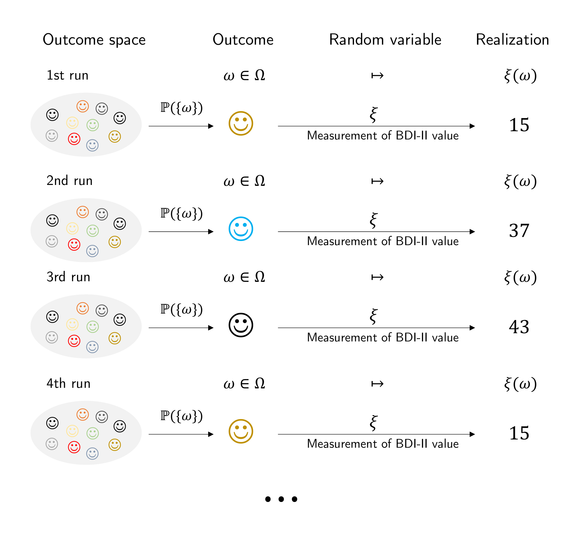
Notation
The conventions for denoting probabilities and distributions associated with random variables take some getting used to, so we record them in the following definition.
Definition 21.3 (Notation for random variables) Let \((\Omega,\mathcal{A},\mathbb{P})\) and \((\mathcal{X},\mathcal{S},\mathbb{P}_\xi)\) be probability spaces and let \(\xi : \Omega \to \mathcal{X}\) be a random variable. Then, with \(S \in \mathcal{S}\) and \(x \in \mathcal{X}\), the following notational conventions hold for events in \(\mathcal{A}\): \[\begin{align*} \begin{split} \{\xi \in S\} & := \{\omega \in \Omega|\xi(\omega) \in S\} \\ \{\xi = x\} & := \{\omega \in \Omega|\xi(\omega) = x\} \\ \{\xi \le x\} & := \{\omega \in \Omega|\xi(\omega) \le x\} \\ \{\xi < x\} & := \{\omega \in \Omega|\xi(\omega) < x\} \\ \{\xi \ge x\} & := \{\omega \in \Omega|\xi(\omega) \ge x\} \\ \{\xi > x\} & := \{\omega \in \Omega|\xi(\omega) > x\} \\ \end{split} \end{align*}\] From these conventions follow the following conventions for probabilities of distributions: \[\begin{align*} \begin{split} \mathbb{P}_\xi\left(\xi \in S\right) & = \mathbb{P}\left(\{\xi \in S\} \right) = \mathbb{P}\left( \{\omega \in \Omega|\xi(\omega) \in S\}\right) \\ \mathbb{P}_\xi\left(\xi = x \right) & = \mathbb{P}\left(\{\xi = x\} \right) = \mathbb{P}\left( \{\omega \in \Omega|\xi(\omega) = x\}\right) \\ \mathbb{P}_\xi\left(\xi \le x \right) & = \mathbb{P}\left(\{\xi \le x\} \right) = \mathbb{P}\left( \{\omega \in \Omega|\xi(\omega) \le x\}\right) \\ \mathbb{P}_\xi\left(\xi < x \right) & = \mathbb{P}\left(\{\xi < x\} \right) = \mathbb{P}\left( \{\omega \in \Omega|\xi(\omega) < x\}\right) \\ \mathbb{P}_\xi\left(\xi \ge x \right) & = \mathbb{P}\left(\{\xi \ge x\} \right) = \mathbb{P}\left(\{\omega \in \Omega|\xi(\omega) \ge x\}\right) \\ \mathbb{P}_\xi\left(\xi > x \right) & = \mathbb{P}\left(\{\xi > x\} \right) = \mathbb{P}\left( \{\omega \in \Omega|\xi(\omega) > x\} \right). \\ \end{split} \end{align*}\] Often the subscript on distribution symbols is also omitted, and, for example, \(\mathbb{P}_\xi\left(\xi \in S\right)\) is written simply as \(\mathbb{P}\left(\xi \in S\right)\) as long as the context does not allow the two probability measures to be confused.
The omission of explicit function notation for functions determined uniquely by random variables, as sketched in 1 for \(\mathbb{P}_\xi\) and \(\mathbb{P}\), is a fundamental phenomenon of modern, application-oriented probability theory. In particular, functions of random variables are in most cases identified through their arguments. Thus, from “\(\mathbb{P}\left(\xi \in S\right)\)”, an attentive reader should understand that \(\mathbb{P}\) refers to the image measure of the random variable \(\xi\), whereas in “\(\mathbb{P}\left(\{\omega \in \Omega|\xi(\omega) \in S\}\right)\)” it refers to the probability measure on the measurable space \((\Omega, \mathcal{A})\). In computer-science applications, the identification of functions by means of their arguments, which also appears in the probability mass functions, probability density functions, and cumulative distribution functions discussed in the following sections, is also called multiple dispatch.
To conclude this section, we record in Theorem 21.1 that arithmetic operations with real-valued random variables again lead to real-valued random variables.
Theorem 21.1 (Arithmetic of real-valued random variables) Let \((\Omega, \mathcal{A}, \mathbb{P})\) be a probability space, let \((\mathbb{R}, \mathcal{B}(\mathbb{R}))\) be the real measurable space, let \(\xi_1 : \Omega \to \mathbb{R}\) and \(\xi_2: \Omega \to \mathbb{R}\) be real-valued random variables, and let \(c \in \mathbb{R}\) be a constant. Furthermore, let \[\begin{align} \begin{split} \xi_1 + c & : \Omega \to \mathbb{R}, \omega \mapsto (\xi_1 + c)(\omega)\, := \xi_1(\omega) + c \mbox{ for } c \in \mathbb{R} \\ c\xi_1 & : \Omega \to \mathbb{R}, \omega \mapsto (c\xi_1)(\omega) \quad\,\,\, := c\xi_1(\omega) \mbox{ for } c \in \mathbb{R} \\ \xi_1 + \xi_2 & : \Omega \to \mathbb{R}, \omega \mapsto (\xi_1 + \xi_2)(\omega) := \xi_1(\omega) + \xi_2(\omega) \\ \xi_1\xi_2 & : \Omega \to \mathbb{R}, \omega \mapsto (\xi_1\xi_2)(\omega)\quad\,\, := \xi_1(\omega)\xi_2(\omega) \\ \end{split} \end{align}\] be the addition of a constant to a real-valued random variable, the multiplication of a real-valued random variable by a constant, the addition of two real-valued random variables, and the multiplication of two real-valued random variables, respectively. Then \(\xi_1 + c\), \(c\xi_1\), \(\xi_1 + \xi_2\), and \(\xi_1\xi_2\) are also real-valued random variables.
For a proof of this theorem, we refer to the advanced literature, for example Hesse (2009). Intuitively, Theorem 21.1 says that adding a random quantity to a constant quantity, multiplying a random quantity by a constant, adding two random quantities, and multiplying two random quantities always again produces random quantities with their own distributions.
21.2 Probability mass functions
In this section, with probability mass functions (PMFs), we introduce a tool for defining distributions of random variables with a discrete (more precisely finite or countable) outcome space. We illustrate the concept using three important examples: Bernoulli and binomial random variables as well as discrete uniform random variables. We first define the concept of a PMF as follows.
Definition 21.4 (Discrete random variable and probability mass function) A random variable \(\xi\) is called discrete if its outcome space \(\mathcal{X}\) is finite or countable and if a function of the form \[\begin{equation} p: \mathcal{X} \to \mathbb{R}_{\ge 0}, x \mapsto p(x) \end{equation}\] exists such that
- \(\sum_{x \in \mathcal{X}} p(x) = 1\)
- \(\mathbb{P}(\xi = x) = p(x)\) for all \(x \in \mathcal{X}\).
Such a function \(p\) is called the probability mass function (PMF) of \(\xi\).
Recall that a set is called countable if it can be mapped bijectively to \(\mathbb{N}\). In German, PMFs are also called counting densities. In English, they are called probability mass functions (PMFs); we follow this terminology here. Without proof, we record that every function \(p : \mathcal{X} \to \mathbb{R}_{\ge 0}\) with the normalization property \(\sum_{x \in \mathcal{X}} p(x) = 1\) can be interpreted as the PMF of a random variable.
Examples
With Bernoulli random variables, binomial random variables, and discrete uniform random variables, we consider three first examples of defining distributions by means of PMFs.
Definition 21.5 (Bernoulli random variable) Let \(\xi\) be a random variable with outcome space \(\mathcal{X} = \{0,1\}\) and PMF \[\begin{equation} p : \mathcal{X} \to [0,1], x\mapsto p(x) := \mu^{x}(1 - \mu)^{1-x} \mbox{ with } \mu \in [0,1]. \end{equation}\] Then we say that \(\xi\) follows a Bernoulli distribution with parameter \(\mu \in [0,1]\) and call \(\xi\) a Bernoulli random variable. We abbreviate this as \(\xi \sim \mbox{Bern}(\mu)\). We denote the PMF of a Bernoulli random variable by \[\begin{equation} \mbox{Bern}(x;\mu) := \mu^x (1 - \mu)^{1 - x}. \end{equation}\]
Bernoulli random variables can be used for probabilistic modeling whenever the phenomenon under consideration is binary and the possible values of the random variable can be mapped bijectively to \(\{0,1\}\). Note that the functional form of the Bernoulli random variable \(\mbox{Bern}(x;\mu)\) makes sense only for \(x \in \{0,1\}\) and not, for example, for \(x \in \{\mbox{H}, \mbox{T}\}\). However, if the possible outcomes of a coin toss are mapped to \(\{0,1\}\), for example by defining \(0 := \mbox{H}\) and \(1 := \mbox{T}\), then a Bernoulli random variable can certainly serve as a model of a coin toss.
The parameter \(\mu \in [0,1]\) of a Bernoulli random variable is the probability that the random variable \(\xi\) assumes the value 1; this can be seen from \[\begin{equation} \mathbb{P}(\xi = 1) = p(1) = \mu^1 (1 -\mu)^{1-1} = \mu. \end{equation}\]
We visualize the PMFs of Bernoulli random variables for \(\mu := 0.1, \mu := 0.5\), and \(\mu := 0.7\) in Figure 21.3.
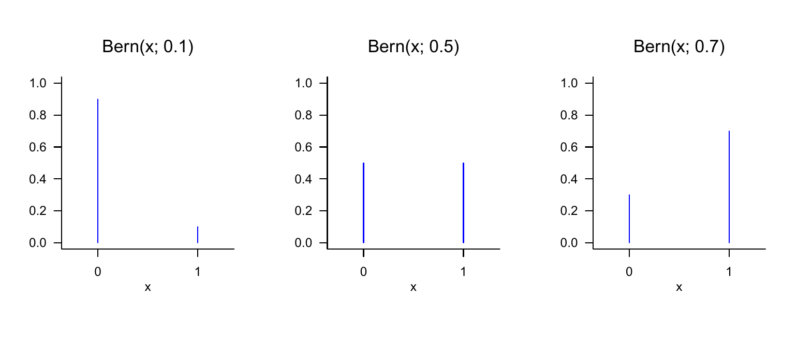
Definition 21.6 (Binomial random variable) Let \(\xi\) be a random variable with outcome space \(\mathcal{X} := \mathbb{N}_n^0\) and PMF \[\begin{equation} p : \mathcal{X} \to [0,1], x\mapsto p(x) := \begin{pmatrix} n \\ x \end{pmatrix} \mu^{x}(1 - \mu)^{n-x} \mbox{ for } \mu \in [0,1]. \end{equation}\] Then we say that \(\xi\) follows a binomial distribution with parameters \(n \in \mathbb{N}\) and \(\mu \in [0,1]\) and call \(\xi\) a binomial random variable. We abbreviate this as \(\xi \sim \mbox{Bin}(n,\mu)\). We denote the PMF of a binomial random variable by \[\begin{equation} \mbox{Bin}(x;n,\mu) := \begin{pmatrix} n \\ x \end{pmatrix} \mu^{x}(1 - \mu)^{n-x}. \end{equation}\]
Without proof, we record that a binomial random variable can be used as a model of the sum of \(n\) independent and identically distributed Bernoulli random variables. In particular, \(\mbox{Bin}(x;1,\mu) = \mbox{Bern}(x;\mu)\) holds. Binomial random variables have the property that with \(n\), one of their parameters determines not only the functional form of their PMF, but also their outcome space \(\mathcal{X}\). We visualize the PMFs of binomial random variables for \((n,\mu) := (5,0.1), (n,\mu) := (10,0.5)\), and \((n,\mu) := (15,0.7)\) in Figure 21.4.
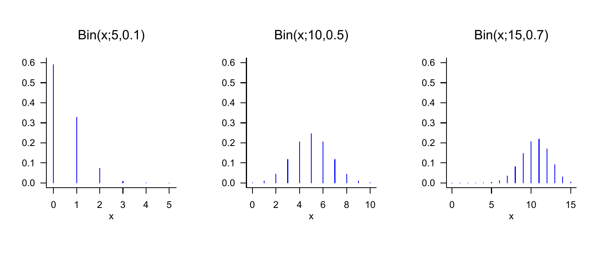
Definition 21.7 (Discrete uniform random variable) Let \(\xi\) be a discrete random variable with finite outcome space \(\mathcal{X}\) and PMF \[\begin{equation} p : \mathcal{X} \to \mathbb{R}_{\ge 0}, x\mapsto p(x) := \frac{1}{|\mathcal{X}|}. \end{equation}\] Then we say that \(\xi\) follows a discrete uniform distribution and call \(\xi\) a discrete uniform random variable. We abbreviate this as \(\xi \sim U(|\mathcal{X}|)\). We denote the PMF of a discrete uniform random variable by \[\begin{equation} U(x;|\mathcal{X}|) := \frac{1}{|\mathcal{X}|}. \end{equation}\]
Discrete uniform random variables can evidently be used for probabilistic modeling whenever the possible discrete outcomes of the modeled phenomenon have the same probability. In the case of discrete uniform random variables, no additional parameter is needed to define their functional form once the outcome space has been specified. Evidently, for \(\mathcal{X} := \{0,1\}\), \[\begin{equation} U(x;|\mathcal{X}|) = \mbox{Bern}(x;0.5) = \mbox{Bin}(x;1,0.5). \end{equation}\] We visualize the PMFs of discrete uniform random variables for \(\mathcal{X} := \{0,1\}\), \(\mathcal{X} := \{-3,-2,-1,0,1\}\), and \(\mathcal{X} := \{-4,-3,-2,-1,0,1,2,3,4\}\) in Figure 21.5. Note that Definition 21.7 does not formally require the elements of \(\mathcal{X}\) to be sequential, so one can just as well define a discrete uniform random variable with outcome space \(\mathcal{X} := \{1,5,7\}\) or even with a non-numeric outcome space \(\mathcal{X} := \{a,b,x,y\}\).
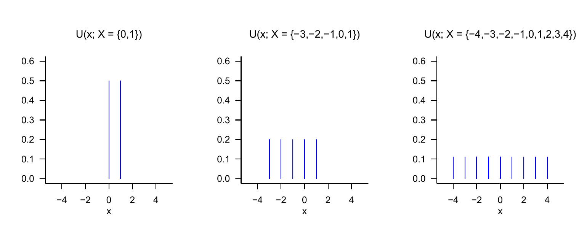
21.3 Probability density functions
In this section, with probability density functions (PDFs), we introduce a tool for defining distributions of random variables with a continuous (more precisely uncountable) outcome space. We first illustrate the concept using the most fundamental of all random variables, the normally distributed random variable. With the gamma random variable, the beta random variable, and the uniform random variable, we then consider three further examples of random variables that are used in many places in the model formulation of both frequentist and Bayesian inference. We define the concept of a PDF as follows.
Definition 21.8 (Continuous random variable and probability density function) A random variable \(\xi\) is called continuous if \(\mathbb{R}\) is the outcome space of \(\xi\) and if a function \[\begin{equation} p: \mathbb{R} \to \mathbb{R}_{\ge 0}, x \mapsto p(x) \end{equation}\] exists such that
- \(\int_{-\infty}^{\infty} p(x)\,dx = 1\) and
- \(\mathbb{P}(\xi \in [a,b]) = \int_a^b p(x)\,dx\) for all \(a,b\in\mathbb{R}\) with \(a \le b\).
Such a function \(p\) is called the probability density function (PDF) of \(\xi\).
Without proof, we record that every function \(p : \mathbb{R} \to \mathbb{R}_{\ge 0}\) whose improper integral satisfies \(\int_{-\infty}^{\infty} p(x)\,dx = 1\), that is, every normalized such function, can be interpreted as the PDF of a random variable.
When working with PDFs, and in contrast to PMFs, one should always keep the density property of a PDF in mind: the values of a PDF are not probabilities but probability densities; probabilities are computed from PDFs by integration according to Definition 21.8 (2). As in the physical sense, the probability mass assigned to a real interval therefore arises only through “multiplication” by the corresponding “interval volume”. Here one may also think of the approximation of the definite integral \(\int_a^b p(x)\,dx\) by a Riemann sum term (cf. Definition 7.3). Intuitively, we therefore have \[\begin{equation} \mbox{(probability) mass} = \mbox{(probability) density} \cdot \mbox{(set) volume,} \end{equation}\] where volume in the sense of Lebesgue measure refers to the width of the interval \([a,b]\). As in the physical analogy, the probability mass of an interval with no volume is zero, \[\begin{equation} \mathbb{P}(\xi = a) = \int_a^a p(x) \,dx = 0. \end{equation}\] Furthermore, for sufficiently small intervals, PDFs can also assume values greater than \(1\), even though this cannot be the case for the probability that results from the corresponding integration. Finally, despite these technical details, the following intuition should be emphasized: if one considers the graphical representation of the PDF of a random variable and imagines a partition of \(\mathbb{R}\) into equally sized intervals, then the random variable naturally has a higher probability of assuming values in an interval with a higher associated probability density than values in an interval with a relatively lower associated probability density.
Normally distributed random variables
As a first example of defining a continuous random variable by means of a PDF, we now introduce the most important random variable of probabilistic modeling: the normally distributed random variable.
Definition 21.9 (Normally distributed random variable) Let \(\xi\) be a random variable with outcome space \(\mathbb{R}\) and PDF \[\begin{equation} p : \mathbb{R} \to \mathbb{R}_{>0}, x\mapsto p(x) := \frac{1}{\sqrt{2\pi \sigma^2}}\exp\left(-\frac{1}{2\sigma^2}(x - \mu)^2\right). \end{equation}\] Then we say that \(\xi\) follows a normal distribution with parameters \(\mu \in \mathbb{R}\) and \(\sigma^2 > 0\) and call \(\xi\) a normally distributed random variable. We abbreviate this as \(\xi \sim N\left(\mu,\sigma^2\right)\). We denote the PDF of a normally distributed random variable by \[\begin{equation} N\left(x;\mu,\sigma^2\right) := \frac{1}{\sqrt{2\pi \sigma^2}}\exp\left(-\frac{1}{2\sigma^2}(x - \mu)^2\right). \end{equation}\] A normally distributed random variable with \(\mu = 0\) and \(\sigma^2 = 1\) is called a standard normally distributed random variable.
We visualize the PDFs of normally distributed random variables for \((\mu,\sigma^2) := (0,1)\), \((\mu,\sigma^2) := (-2.5, 10)\), and \((\mu,\sigma^2) := (3, 0.5)\) in Figure 21.6. This figure makes graphically clear that the PDFs of normally distributed random variables always have exactly one value of highest probability density, namely at the location of the parameter \(\mu \in \mathbb{R}\). This follows from the fact that, because of the negative sign of the square of \(x-\mu\) and the positivity of \(\sigma^2\), the argument of the exponential function in the functional form of \(N(x;\mu,\sigma^2)\) is always non-positive, and the exponential function on the non-positive real numbers assumes its maximum at \(x = \mu\), that is, \(x-\mu = 0\). The figure also makes graphically clear that the parameter \(\sigma^2>0\) encodes the width of the PDF of a normally distributed random variable.
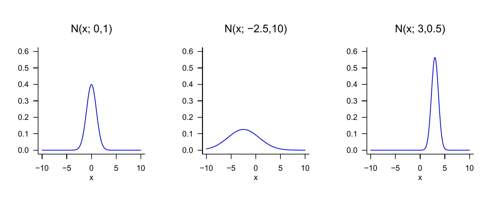
Further examples
With gamma random variables, beta random variables, and uniform random variables, we consider three further examples of defining distributions by means of PDFs.
Definition 21.10 (Gamma random variable) Let \(\xi\) be a random variable with outcome space \(\mathcal{X} := \mathbb{R}_{>0}\) and PDF \[\begin{equation} p : \mathbb{R}_{>0} \to \mathbb{R}_{>0}, x \mapsto p(x) := \frac{1}{\Gamma(\alpha)\beta^{\alpha}}x^{\alpha-1}\exp\left(-\frac{x}{\beta}\right), \end{equation}\] where \(\Gamma\) denotes the gamma function. Then we say that \(\xi\) follows a gamma distribution with shape parameter \(\alpha >0\) and scale parameter \(\beta > 0\) and call \(\xi\) a gamma-distributed random variable. We abbreviate this as \(\xi \sim G(\alpha,\beta)\). We denote the PDF of a gamma-distributed random variable by \[\begin{equation} G(x;\alpha,\beta) := \frac{1}{\Gamma(\alpha)\beta^{\alpha}}x^{\alpha-1}\exp\left(-\frac{x}{\beta}\right). \end{equation}\]
The special gamma random variable with PDF \(G\left(x;\frac{n}{2},2\right)\) is called the chi-square (\(\chi^2\)) distribution with \(n\) degrees of freedom. We visualize the PDFs of gamma random variables for \((\alpha,\beta) := (1,1)\), \((\alpha,\beta) := (2,2)\), and \((\alpha,\beta) := (5,1)\) in Figure 21.7.
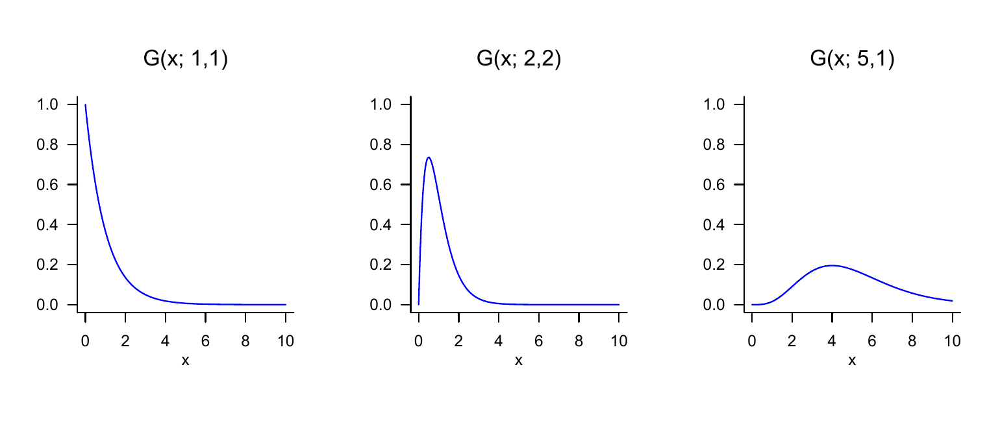
Definition 21.11 (Beta random variable) Let \(\xi\) be a random variable with outcome space \(\mathcal{X} := [0,1]\) and PDF \[\begin{equation} p: \mathcal{X} \to [0,1], x \mapsto p(x) := \frac{\Gamma(\alpha + \beta)}{\Gamma(\alpha)\Gamma(\beta)} x^{\alpha-1}(1-x)^{\beta-1} \mbox{ with } \alpha,\beta \in \mathbb{R}_{>0}, \end{equation}\] where \(\Gamma\) denotes the gamma function. Then we say that \(\xi\) follows a beta distribution with parameters \(\alpha >0\) and \(\beta>0\), and call \(\xi\) a beta random variable. We abbreviate this as \(\xi \sim \mbox{Beta}(\alpha,\beta)\). We denote the PDF of a beta random variable by \[\begin{equation} \mbox{Beta}(x;\alpha,\beta) := \frac{\Gamma(\alpha + \beta)}{\Gamma(\alpha)\Gamma(\beta)} x^{\alpha-1}(1-x)^{\beta-1}. \end{equation}\]
Because the outcome space of a beta random variable is restricted to the interval \(\mathcal{X} := [0,1]\) (more precisely \(\mathcal{X} := ]0,1[\) for \(\alpha < 1, \beta < 1\)), a beta random variable is useful, among other things, for describing probabilities of probabilities, that is, values between 0 and 1. We visualize the PDFs of beta random variables for \((\alpha,\beta) := (1,1)\), \((\alpha,\beta) := (3,2)\), and \((\alpha,\beta) := (10,5)\) in Figure 21.8.
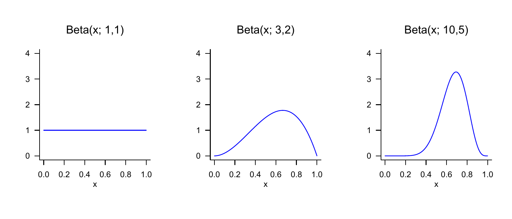
With uniform random variables, we finally consider the analogue of discrete uniform random variables for the case of continuous random variables.
Definition 21.12 (Uniform random variable) Let \(\xi\) be a continuous random variable with outcome space \(\mathbb{R}\) and PDF \[\begin{equation} p : \mathbb{R} \to \mathbb{R}_{\ge 0}, x\mapsto p(x) := \begin{cases} \frac{1}{b - a} & x \in [a,b] \\ 0 & x \notin [a,b] \end{cases}. \end{equation}\] Then we say that \(\xi\) follows a uniform distribution with parameters \(a\) and \(b\) and call \(\xi\) a uniform random variable. We abbreviate this as \(\xi \sim U(a,b)\). We denote the PDF of a uniform random variable by \[\begin{equation} U(x;a,b) := \frac{1}{b - a}. \end{equation}\]
We visualize the PDFs of uniform random variables for \((a,b) := (0,1)\), \((a,b) := (-3,1)\), and \((a,b) := (-4,4)\) in Figure 21.9.
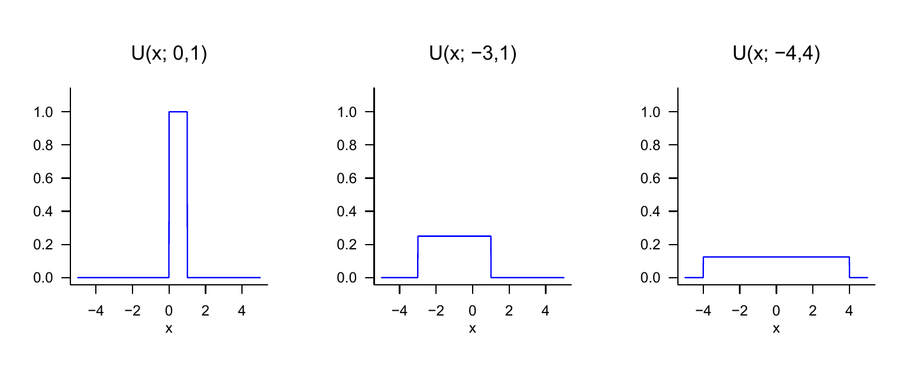
21.4 Cumulative distribution functions
In the final section of this chapter, with cumulative distribution functions (CDFs), we introduce another way of specifying the distributions of discrete or continuous random variables. In general, however, it is more common to do this with PMFs or PDFs. Nevertheless, CDFs are useful in many places because, for both discrete and continuous random variables, they establish a direct connection between values of the random variable and certain probabilities that does not require summation or integration in application. We first consider the general definition of CDFs for both discrete and continuous random variables and then turn to the CDFs of discrete and continuous random variables in detail. For an arbitrary random variable, we define the concept of a CDF as follows.
Definition 21.13 (Cumulative distribution function) The cumulative distribution function (CDF) of a random variable \(\xi\) is defined as \[\begin{equation} P : \mathbb{R} \to [0,1], x \mapsto P(x) := \mathbb{P}(\xi \le x). \end{equation}\]
Note that \(P(x)\) is defined for every \(x \in \mathbb{R}\), even if for a given \(x\in \mathbb{R}\) we have \(x \notin \mathcal{X}\). With the help of CDFs, for example, exceedance probabilities and interval probabilities of random variables can be evaluated directly. This is the content of the following theorems.
Theorem 21.2 (Exceedance probability) Let \(\xi\) be a random variable with outcome space \(\mathcal{X}\) and let \(P\) be its cumulative distribution function. Then, for the exceedance probability \(\mathbb{P}(\xi > x)\), \[\begin{equation} \mathbb{P}(\xi > x) = 1 - P(x) \mbox{ for all } x \in \mathcal{X}. \end{equation}\]
Proof. The events \(\{\xi > x\}\) and \(\{\xi \le x\}\) are disjoint, and \[\begin{equation} \Omega = \{\omega\in \Omega| \xi(\omega) > x\} \cup \{\omega\in \Omega|\xi(\omega) \le x\} = \{\xi > x\} \cup \{\xi \le x\}. \end{equation}\] With the \(\sigma\)-additivity of \(\mathbb{P}\) it follows that \[\begin{align} \begin{split} \mathbb{P}(\Omega) & = 1 \\ \Leftrightarrow \mathbb{P}( \{\xi > x\} \cup \{\xi \le x\}) & = 1 \\ \Leftrightarrow \mathbb{P}(\{\xi > x\}) + \mathbb{P}(\{\xi \le x\}) & = 1 \\ \Leftrightarrow \mathbb{P}(\{\xi > x\}) & = 1 - \mathbb{P}(\{\xi \le x\}) \\ \Leftrightarrow \mathbb{P}(\{\xi > x\}) & = 1 - P(x). \end{split} \end{align}\]
Theorem 21.3 (Interval probabilities) Let \(\xi\) be a random variable with outcome space \(\mathcal{X}\) and let \(P\) be its CDF. Then, for the interval probability \(\mathbb{P}(\xi \in \,]x_1,x_2])\), \[\begin{equation} \mathbb{P}(\xi \in \, ]x_1,x_2]) = P(x_2) - P(x_1) \mbox{ for all } x_1,x_2 \in \mathcal{X} \mbox{ with } x_1 < x_2. \end{equation}\]
Proof. We consider the events \(\{\xi \le x_1\}\), \(\{x_1 < \xi \le x_2\}\), and \(\{\xi \le x_2\}\), where \[\begin{equation} \{\xi \le x_1\} \cap \{x_1 < \xi \le x_2\} = \emptyset \mbox{ and } \{\xi \le x_1\} \cup \{x_1 < \xi \le x_2\} = \{\xi \le x_2\}. \end{equation}\] With the \(\sigma\)-additivity of \(\mathbb{P}\) it then follows that \[\begin{align} \begin{split} \mathbb{P}(\{\xi \le x_1\} \cup \{x_1 < \xi \le x_2\}) & = \mathbb{P}(\{\xi \le x_2\}) \\ \Leftrightarrow \mathbb{P}(\{\xi \le x_1\}) + \mathbb{P}(\{x_1 < \xi \le x_2\}) & = \mathbb{P}(\{\xi \le x_2\}) \\ \Leftrightarrow \mathbb{P}(\{x_1 < \xi \le x_2\}) & = \mathbb{P}(\{\xi \le x_2\}) - \mathbb{P}(\{\xi \le x_1\}) \\ \Leftrightarrow \mathbb{P}(\{x_1 < \xi \le x_2\}) & = P(x_2) - P(x_1) \\ \Leftrightarrow \mathbb{P}(\xi \in \,]x_1,x_2]) & = P(x_2) - P(x_1). \end{split} \end{align}\]
The following theorem states three central properties of CDFs. The third property says that a CDF has no jumps when one approaches limit points from the right. In fact, the properties discussed are precisely the defining properties of CDFs; that is, every function \(P\) that satisfies the properties of Theorem 21.4 can be interpreted as the CDF of a random variable. For a proof of this fact, we refer to the advanced literature.
Theorem 21.4 (Properties of cumulative distribution functions) Let \(\xi\) be a random variable and let \(P\) be its cumulative distribution function. Then \(P\) has the following properties:
- \(P\) is monotonically increasing, that is, if \(x_1 < x_2\), then \(P(x_1)\le P(x_2)\).
- \(\lim_{x \to -\infty} P(x) = 0\) and \(\lim_{x \to \infty} P(x) = 1\).
- \(P\) is right-continuous, that is, \(P(x) = \lim_{y \to x, y > x} P(y)\) for all \(x \in \mathbb{R}\).
Proof. We consider the properties in order.
First, we record that for events \(A \subset B\), \(\mathbb{P}(A)\le \mathbb{P}(B)\) holds. We then note that for \(x_1 < x_2\), \[\begin{equation} \{\xi \le x_1\} = \{\omega \in \Omega|\xi(\omega)\le x_1\} \subset \{\omega \in \Omega|\xi(\omega)\le x_2\} = \{\xi \le x_2\}. \end{equation}\] Thus, \[\begin{equation} \mathbb{P}(\{\xi \le x_1\}) \le \mathbb{P}\{\xi \le x_2\} \Rightarrow P(x_1) \le P(x_2). \end{equation}\]
For a proof, we refer to the advanced literature.
We define \[\begin{equation} P\left(x^+\right) = \lim_{y \to x, y > x} P(y). \end{equation}\] Now let \(y_1 > y_2 > \cdots\) be such that \(\lim_{n \to \infty}y_n = x\). Then \[\begin{equation} \{\xi \le x\} = \cap_{n = 1}^\infty \{\xi \le y_n\}. \end{equation}\] Thus, \[\begin{equation} P(x) = \mathbb{P}(\{\xi \le x\}) = \mathbb{P}(\cap_{n = 1}^\infty \{\xi \le y_n\}) = \lim_{n\to \infty}\mathbb{P}(\{\xi \le y_n\}) = P\left(x^+\right), \end{equation}\] where we leave the third equality unjustified.
CDFs of discrete random variables
Using Figure 21.10 and Figure 21.11, we want to make the above properties of CDFs of discrete random variables visually clear. One should always keep in mind that the value \(P(x)\) of a CDF at the outcome value \(x\) of the random variable \(\xi\) corresponds to the probability \(\mathbb{P}(\xi \le x)\), that is, the probability that the random variable \(\xi\) assumes values less than or equal to \(x\). If these probabilities are read off accordingly from the representations of the corresponding PMF, then the functional form of the CDFs follows intuitively in comparison with the corresponding PMFs. Furthermore, the following properties of the CDFs of discrete random variables also become intuitive: if \(a < b\) and \(\mathbb{P}(a < \xi < b) = 0\), then the CDF of \(\xi\) is horizontally constant on ]\(a,b\)[. Furthermore, at every point \(x\) with \(\mathbb{P}(\xi=x)>0\), the CDF jumps by the amount \(\mathbb{P}(\xi=x)\) and is therefore not left-continuous at that point. In general, the CDF of a discrete random variable with outcome space \(\mathbb{N}_0\) is given by \[\begin{equation} P : \mathbb{R} \to [0,1], x \mapsto P(x) := \sum_{k=0}^{\lfloor x \rfloor} \mathbb{P}(\xi = k), \end{equation}\] where \(\lfloor x \rfloor\) denotes the floor function.
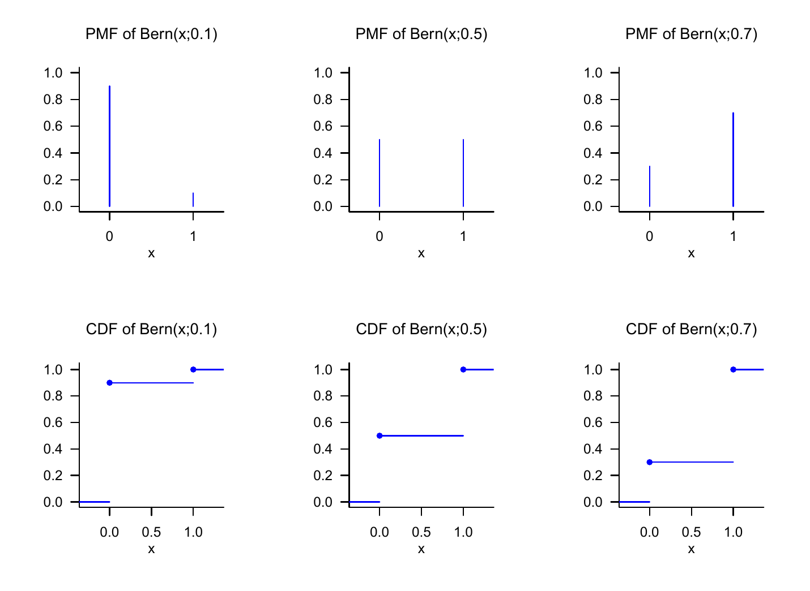
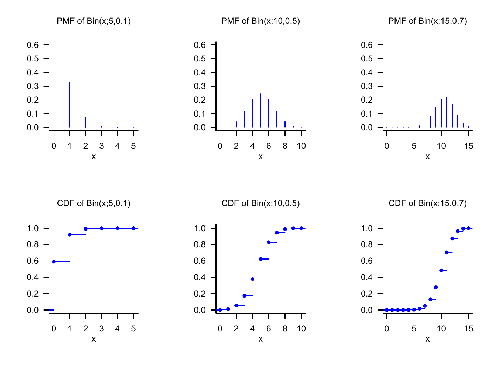
CDFs of continuous random variables
The CDFs of continuous random variables are analytically somewhat more accessible than the CDFs of discrete random variables because they have no discontinuities. We first have the following, perhaps somewhat surprising theorem.
Theorem 21.5 (Cumulative distribution functions of continuous random variables) Let \(\xi\) be a continuous random variable with PDF \(p\) and CDF \(P\). Then \[\begin{equation} P(x) = \int_{-\infty}^x p(s)\,ds \mbox{ and } p(x) = P'(x). \end{equation}\]
Proof. First, we record that because \(\mathbb{P}(\xi = x) = 0\) for all \(x \in \mathbb{R}\), the CDF of \(\xi\) has no jumps and \(P\) is therefore continuous. From the definitions of PDF and CDF, it follows that \(P\) has the form of an antiderivative of \(p\). That \(p\) is the derivative of \(P\) then follows directly from the first fundamental theorem of calculus (Theorem 7.4).
For continuous random variables, the CDF of the random variable is therefore an antiderivative of the corresponding PDF, and conversely, the PDF is the derivative of the CDF. In the context of the Radon-Nikodym theorem, this insight is generalized to general measures (cf. Schmidt (2009)). CDFs of continuous random variables are also often called cumulative density functions.
As an example, consider the CDF of a normally distributed random variable. Let \(\xi \sim N(\mu,\sigma^2)\). Then the PDF of \(\xi\) is known to be given by \[\begin{equation} p : \mathbb{R} \to \mathbb{R}_{>0}, x \mapsto p(x) := \frac{1}{\sqrt{2\pi\sigma^2}}\exp\left(-\frac{1}{2\sigma^2}(x-\mu)^2\right). \end{equation}\] For the CDF of \(\xi\), it follows accordingly that \[\begin{equation} P : \mathbb{R} \to ]0,1[, x \mapsto P(x) = \frac{1}{\sqrt{2\pi\sigma^2}}\int_{-\infty}^x\exp\left(-\frac{1}{2\sigma^2}(s -\mu)^2\right)\,ds. \end{equation}\] Interestingly, the defining integral of the CDF of a normally distributed random variable can be computed only numerically, not analytically. We visualize selected PDFs and CDFs of normally distributed random variables in Figure 21.12.
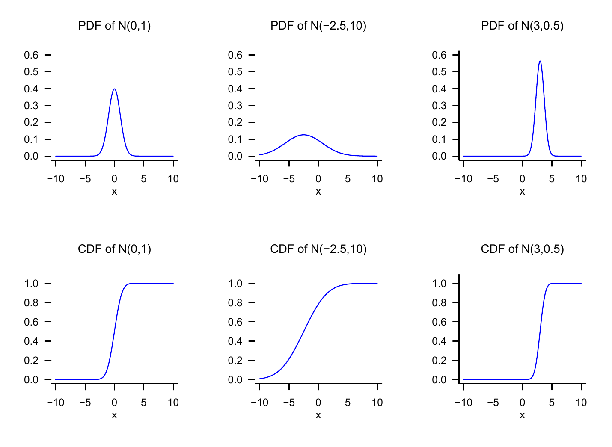
Inverse cumulative distribution function
We conclude this section with the concept of the inverse cumulative distribution function, a technical tool that is used especially in confidence intervals and hypothesis tests of frequentist inference to determine critical values. We define the inverse CDF as follows.
Definition 21.14 (Inverse cumulative distribution function) Let \(\xi\) be a continuous random variable with CDF \(P\). Then the function \[\begin{equation} P^{-1} : ]0,1[ \to \mathbb{R}, q \mapsto P^{-1}(q) := \{x \in \mathbb{R}|P(x) = q\} \end{equation}\] is called the inverse cumulative distribution function of \(\xi\).
According to Definition 21.14, the function \(P^{-1}\) is evidently the inverse function of \(P\), so that \[\begin{equation} P^{-1}(P(x)) = x. \end{equation}\] Since it is well known that \[\begin{equation} P(x) = q \Leftrightarrow \mathbb{P}(\xi \le x) = q \mbox{ for } q \in ]0,1[, \end{equation}\] \(P^{-1}(q)\) is therefore the value \(x\) of \(\xi\) such that \(\mathbb{P}(\xi \le x) = q\). We visualize the CDFs and inverse CDFs of normally distributed random variables in Figure 21.13. In the case of a normally distributed random variable \(\xi \sim N(0,1)\), for example, \[\begin{equation} P(1.645) = 0.950 \Leftrightarrow P^{-1}(0.950) = 1.645, \end{equation}\] and \[\begin{equation} P(1.906) = 0.975 \Leftrightarrow P^{-1}(0.975) = 1.960. \end{equation}\]
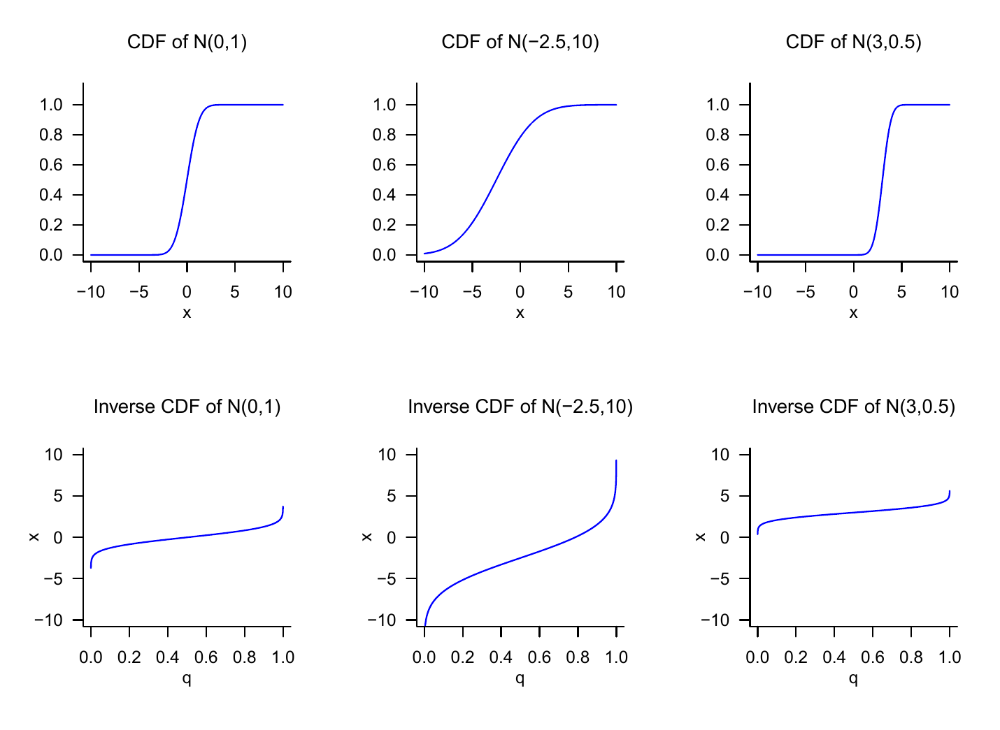
21.5 Random outcomes and random variables
With the outcomes \(\omega\) discussed in Chapter 19 and the values of random variables \(\xi\) discussed in this chapter, we have now encountered two concepts that can describe uncertainty about a usually numerical value of a random process. For example, the number of pips that a die shows in a single throw can be conceived as the realization of an outcome or of a random variable. In fact, there is no standardized answer to the question of whether one should model a random process only with a probability space or with the underlying probability space of a random variable and the probability space induced by both. In applications, the concept of the random variable is usually preferred and corresponding PMFs or PDFs are specified without specifying an underlying probability space or the mapping form of the random variable. The following formulation is typical, for example:
\(\xi\) is a normally distributed random variable with expectation parameter \(\mu\) and variance parameter \(\sigma^2\).
Implicitly, based on the definition of the normally distributed random variable (cf. Definition 21.9), this statement specifies for \(\xi\) the outcome space \(\mathcal{X} := \mathbb{R}\), the \(\sigma\)-algebra \(\mathcal{S} := \mathcal{B}(\mathbb{R})\), and the distribution \(\mathbb{P}_\xi := N(\mu,\sigma^2)\), that is, it considers the “induced” probability space \(\left(\mathbb{R},\mathcal{B}(\mathbb{R}), N(\mu,\sigma^2)\right)\). However, it remains unclear by which probability space and which exact mapping form \(\left(\mathbb{R},\mathcal{B}(\mathbb{R}), N(\mu,\sigma^2)\right)\) was induced. This can always be supplemented by assuming that \(\xi\) is the identity function. Concretely, one could choose as the underlying probability space here \(\left(\mathbb{R},\mathcal{B}(\mathbb{R}), N(\mu,\sigma^2)\right)\) and choose \(\xi\) as \[\begin{equation} \xi : \mathbb{R} \to \mathbb{R}, \omega \mapsto \xi(\omega) := \omega := x. \end{equation}\] Since \(\xi\) then changes nothing about the outcome \(\omega\) realized randomly in the context of the underlying probability space and merely renames it as \(x\), the distribution of \(\xi\) here directly corresponds to the probability measure of the underlying probability space.
In general, one may note that modeling random processes by means of random variables therefore contains the elementary probability space model as a special case, but beyond this it opens up the possibility of formalizing and studying the transformation of probability measures on different measurable spaces by means of random variables that differ from the identity map.
21.6 Literature
The genesis of the concept of the random variable is closely interwoven with the development of probability theory over the last three centuries, so no publication decisive for the concept can be named. The mathematical development of the concept of the normal distribution by Abraham De Moivre (1667-1754), Pierre Simon Laplace (1749-1827), Johann Carl Friedrich Gauss (1777-1855), and many others, its descriptive-statistical counterparts in empirical research of the nineteenth century, and its multivariate generalization in the late nineteenth century are presented in detail in Stigler (1986).
Self-control questions
- State the definition of the concept of a random variable.
- Explain the equation \(\mathbb{P}_\xi(\xi = x) = \mathbb{P}(\{\xi = x\})\).
- Explain the intuitive meaning of \(\mathbb{P}(\xi = x)\).
- State the definition of the concept of a probability mass function.
- State the definition of the concept of a probability density function.
- State the definition of the PDF of a normally distributed random variable.
- State the definition of the concept of a cumulative distribution function.
- Write the exceedance probability \(\mathbb{P}(\xi > x)\) of a random variable using its CDF.
- Write the interval probability \(\mathbb{P}(\xi \in ]x_1,x_2]\) of a random variable using its CDF.
- Write the value \(P(x)\) of the CDF of a continuous random variable using its PDF \(p\).
- Write the value \(p(x)\) of the PDF of a continuous random variable using its CDF \(P\).
- State the definition of the concept of the inverse distribution function.
Solutions
- See Definition 21.1.
- The equation says that the probability value assigned by the distribution \(\mathbb{P}_\xi\) of the random variable \(\xi\) to the event \(\xi = x\) in \(\mathcal{X}\) is, by definition, equal to the value assigned by the probability measure \(\mathbb{P}\) to the preimage of the event \(\xi = x\), that is, to the set \(\{\xi = x\} = \{\omega \in \Omega|\xi(\omega) = x\}\) in \(\mathcal{A}\). See
- Intuitively, \(\mathbb{P}(\xi = x)\) is the probability that the random variable \(\xi\) assumes the value \(x\).
- See Definition 21.4.
- See Definition 21.8.
- See Definition 21.9.
- See Definition 21.13.
- See Theorem 21.2.
- See Theorem 21.3.
- See Theorem 21.5. We have \[\begin{equation} P(x) = \int_{-\infty}^x p(s)\,ds. \end{equation}\]
- See Theorem 21.5. We have \[\begin{equation} p(x) = \frac{d}{dx}P(x) = P'(x). \end{equation}\]
- See Definition 21.14.
Hesse, C. (2009). Wahrscheinlichkeitstheorie (2nd ed.). Vieweg + Teubner.
Schmidt, K. D. (2009). Maß und Wahrscheinlichkeit. Springer.
Stigler, S. M. (1986). The history of statistics: The measurement of uncertainty before 1900. Belknap Press of Harvard University Press.